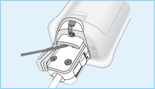
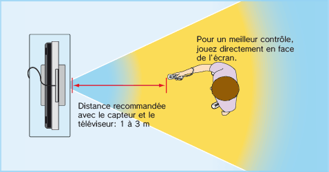

2 |
Consignes d’utilisation |
 |
  Informations supplémentaires sur l'utilisation de la dragonne: Il se peut que vous ayez à effectuer des mouvements secs ou rapides avec la télécommande Wii ou le Nunchuk™ lorsque vous jouez à la Wii. Veuillez utiliser la dragonne au cas où vous lâcheriez la télécommande Wii afin de réduire le risque d’endommager la télécommande Wii, les objets alentour ou de blesser des personnes. Pour obtenir de plus amples informations et garantir une utilisation sûre du produit, veuillez vous référer au mode d’emploi Wii – Installation de la console (section Utiliser la télécommande Wii).

Laissez suffisamment d’espace libre autour de vous! Vous aurez probablement à vous déplacer et à effectuer des mouvements assez amples pendant vos parties; assurez-vous donc de jouer suffisamment loin des meubles, des objets ou des personnes alentour pour éviter de les toucher accidentellement. Comme indiqué dans le mode d'emploi Wii, il vous est recommandé de vous tenir à un minimum d'un mètre de la télévision. 
Ces informations sont également disponibles sur: www.nintendo.com/healthsafety. |
 sur la télécommande Wii – ET PAS LA TELECOMMANDE Wii ELLE-MEME – pour lancer la boule. Si vos mains deviennent moites ou humides pour une raison quelconque, arrêtez de jouer et séchez-les avant de recommencer à jouer. Evitez tout mouvement excessivement ample, rapide ou vigoureux qui pourrait vous faire lâcher la télécommande Wii et casser la dragonne. Si cela se produit, vous risquez de blesser les personnes alentour et de casser la télécommande Wii ou d’autres objets.
sur la télécommande Wii – ET PAS LA TELECOMMANDE Wii ELLE-MEME – pour lancer la boule. Si vos mains deviennent moites ou humides pour une raison quelconque, arrêtez de jouer et séchez-les avant de recommencer à jouer. Evitez tout mouvement excessivement ample, rapide ou vigoureux qui pourrait vous faire lâcher la télécommande Wii et casser la dragonne. Si cela se produit, vous risquez de blesser les personnes alentour et de casser la télécommande Wii ou d’autres objets.

 |
 |
 |